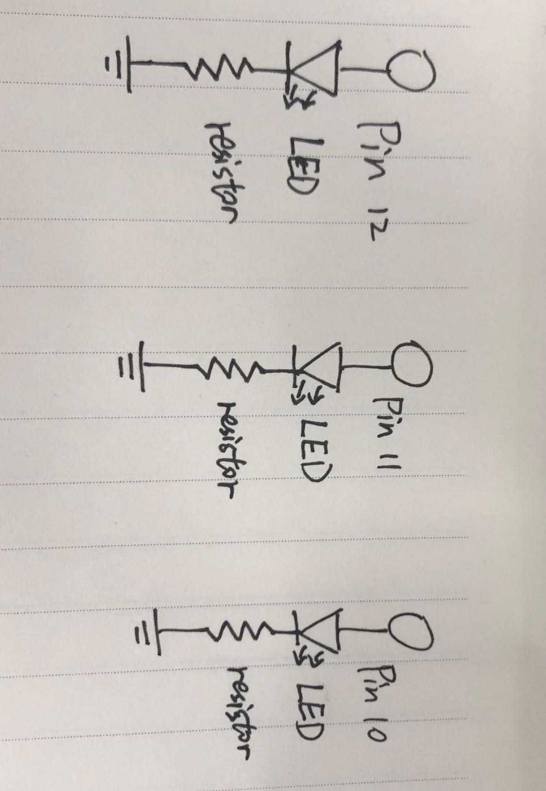
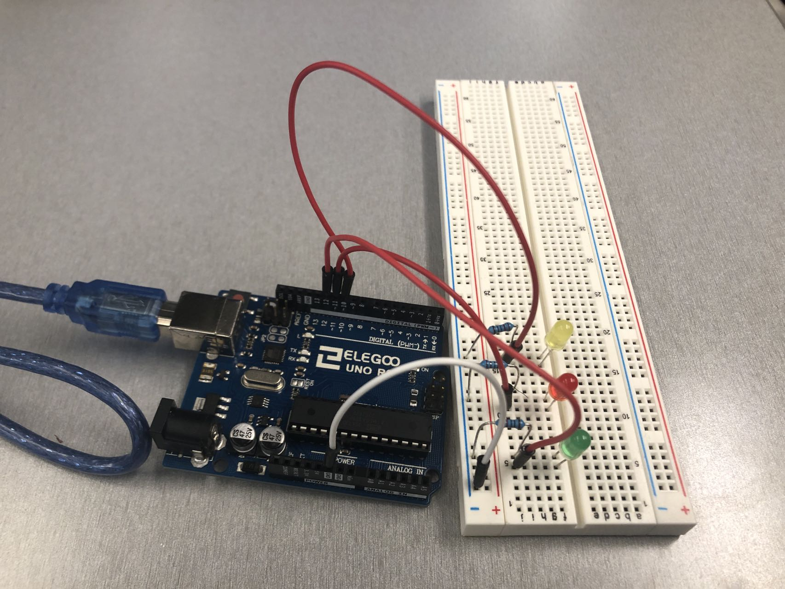

Blink!

The 3 LEDs are connected from the three ports to ground.
Each LED is accompanied by a 220Ω resistor to ensure that no excessive current is passed through.
V = I * R
5V - 1.8V = 20mA * R
3.2V = 0.02A * R
R = 160Ω
Therefore, resistance cannot be smaller than 160Ω. 220Ω resistor works fine!

The circuit is connected from port 12, 11, 10 to ground, with a LED and a 220Ω resistor in between.

A GIF showing the operation of the circuit!
The code that make this work:
void setup() {
// Set Pin 12, 11, and 10 as outputs
pinMode(12, OUTPUT);
pinMode(11, OUTPUT);
pinMode(10, OUTPUT);
}
void loop() {
// Turn on the LED on Pin 12, and keep the other LEDs off for 0.1 seconds.
digitalWrite(12, HIGH);
digitalWrite(11, LOW);
digitalWrite(10, LOW);
delay(100);
// Turn on the LED on Pin 11, and keep the other LEDs off for 0.1 seconds.
digitalWrite(12, LOW);
digitalWrite(11, HIGH);
digitalWrite(10, LOW);
delay(100);
// Turn on the LED on Pin 10, and keep the other LEDs off for 0.1 seconds.
digitalWrite(12, LOW);
digitalWrite(11, LOW);
digitalWrite(10, HIGH);
delay(100);
// Turn on the LED on Pin 11, and keep the other LEDs off for 0.1 seconds.
digitalWrite(12, LOW);
digitalWrite(11, HIGH);
digitalWrite(10, LOW);
delay(100);
}